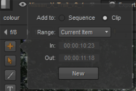
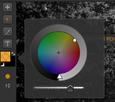
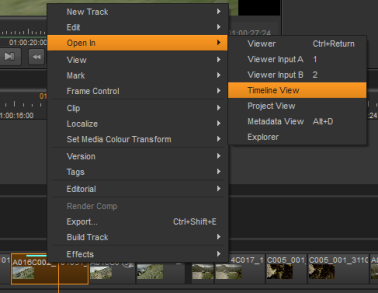
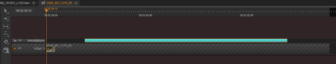
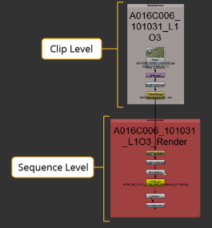
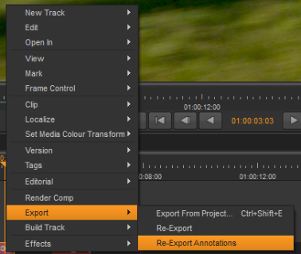

Annotations can be used as quick instructions for a compositor to implement in
Annotations can be exported with a Nuke Comp and can then be viewed and/or deleted in the Compositing environment. When all the suggested changes have been made to the script in the Compositing environment, this can be saved as a new comp version and then rendered back to the Timeline environment. If you want to add new annotations to the rendered Nuke Comp, you can choose to re-export annotations only.
The following steps show an example of Nuke Studio workflow for annotations:
| 1. | In the Viewer, open the Annotations menu. |
See The Annotations Menu for more information for more information about it.
| 2. | Add an annotation to a clip instance(s) at sequence or clip-level, by using the Annotation menu tools. |
See Adding Annotations for more information.
| 3. | You can choose to edit a sequence or clip-level annotation after it has been created. See Editing Sequence-Level Annotations or Editing Clip-Level Annotations for more information. |
| 4. | Create a Nuke Comp of the clip instance with the annotations, ensuring annotations are enabled in the export settings. |
| 5. | Open the Nuke Comp |
See Viewing Annotations in the Compositing Environment for more information.
| 6. | After the suggested changes are made in the Compositing environment, select File > Save New Comp Version. |
| 7. | Return to the timeline, and version up the Nuke Comp by right-clicking it and selecting Versions > Version Up. |
The Nuke Comp is versioned up. Depending on your Preferences > Performance > Threads/Processes > Rendering > background renders setting, the comp may need rendering manually.
| 8. | You can add new annotations to the rendered Nuke Comp by ensuring you select the Clip radio button and then using the Annotations menu tools. |
| 9. | After adding the new annotations, right-click the rendered Nuke Comp and select Export > Re-Export Annotations. |
| 10. | Open the rendered Nuke Comp |
| 11. | Double-click the Precomp node to open its properties and version it up. For example, if the file path has v01.nk at the end, change it to v02.nk. See Re-Exporting Annotations from the Timeline for more information. |
| 12. | Display the Precomp in the Viewer. |
Your new annotations are displayed.
You can open the Annotations menu by selecting the paint brush icon at the top-right of the Viewer.
The Annotations menu displays down the left side of the Viewer.
NOTE: Annotations on sequences and clip instances are only visible when you have the Annotations menu open.
To add an annotation, do the following:
| 1. | After you have opened the Annotations menu, move the playhead on the timeline to where you want to add your annotation. |
| 2. | Click the + (addition) icon. |
A dialog is displayed containing annotation options.

| 3. | You can choose which level you want to add your annotation to, sequence or clip-level, by selecting either the Sequence or Clip radio buttons. |
When you add an annotation to the clip level, a turquoise line is displayed within the top of the clip instance. When you apply an annotation to the sequence level, a turquoise box appears above the selected section on a separate Annotations track.
| 4. | From the Range dropdown select one of the following: |
• Current Item - Applies the annotation to the clip instance at the current playhead position.
• Current Frame - Applies the annotation to the frame at the current playhead position.
• In/Out Points - Applies the annotation to in and out points that have already been marked on the timeline.
• All - Applies the annotation to the whole track.
• Custom - When you select this from the Range dropdown, the in and out point fields within the dialog, become active. You can then use these to set the section that you want your annotation to appear on.
NOTE: The timecode displayed in the In and Out fields is derived from the clip's metadata, not its position in the sequence.
| 5. | When you have set where you want your annotation to appear, click New. |
A label is added to the location of your annotations, detailing the clip timecode and name.
You can click and drag this label to place it anywhere in the Viewer.
| 6. | To draw in your annotation, select the paint brush tool from the Annotation menu. |
This is highlighted orange when selected.
| 7. | Before drawing in the Viewer, you can set the brush and paint settings: |
• Select the brush and/or background color by clicking the paint colors icon .
This opens a color wheel that allows you to select the color and brightness, and an opacity slider underneath that you can use to set the opacity of the paint.

• Select the paint brush size icon  to set the required brush size. You can either use the slider to drag to your required brush size, or enter it into the brush size field.
to set the required brush size. You can either use the slider to drag to your required brush size, or enter it into the brush size field.

NOTE: You can also edit these settings after drawing by clicking the selection tool in the Annotations menu, selecting the lines that you've drawn in the Viewer, and then adjusting the paint brush settings.
| 8. | Click and drag in the Viewer to draw with your selected brush settings. |
| 9. | To add text to your annotation, click the text icon in the Annotations menu and then click anywhere in Viewer to enter your required text. |
A text dialog appears allowing you to type your required text, align it horizontally and vertically, and adjust the text size. You can then click and drag the text box to anywhere in the Viewer.
You can choose to disable and re-enable annotations from the output. To enable or disable a sequence-level annotation, simply select the annotation by clicking on the turquoise box and then pressing D. To enable or disable a clip-level annotation, you first need to open the clip instance – that includes the annotation – in the timeline view. Then you can select the annotation and press D.
You can choose to edit, copy, move, and delete any annotations that were added on the sequence-level.
To remove an annotation from the sequence-level, simply select the turquoise box representing the annotation you want to move from the Annotation track, right-click and select Edit > Delete (or press Backspace or Delete on the keyboard).
To copy an annotation that was added at sequence level:
| 1. | Select the annotation and then click Edit > Copy (or press Ctrl/Cmd+C). You can also access these tools in the right-click menu. |
| 2. | Move the timeline playhead to the position where you want to paste the annotation. |
| 3. | Select Edit > Paste (or press Ctrl/Cmd+V). |
NOTE: You can also copy and paste annotations, that were added at sequence-level, between different sequences.
To move an annotation that was added at sequence level, you can simply click and drag it to the required location. You can also drag annotations to different track levels.
You can trim an annotation at either end by hovering the cursor over one end of the annotation until it changes into the trim icon:
Then click and drag to where you want to trim the annotation to.
To edit the actual annotation, you can use the selection tool in the Annotations menu to select the annotation in the Viewer and move it, delete it, or replace it.
You can choose to move, trim, and simply delete clip-level annotations.
To edit a clip-level annotation, you first need to open the annotated clip instance as a timeline. To do this:
| 1. | Right-click the clip instance with the annotation you want edit. |
| 2. | Select Open In > Timeline View. |

The clip instance opens in the Timeline View, and the annotation now appears as on a separate level from the video. To view the annotation in the Viewer, ensure the Annotation menu is open.

To move a clip-level annotation from the Timeline view, hover the cursor over the annotation until it changes into a move icon:

Then simply click and drag it to where you want to move it to.
You can trim an annotation at either end by hovering the cursor over one end of the annotation until it changes into the trim icon:
Then click and drag to where you want to trim the annotation to.
To delete the annotation, click the turquoise box and select Edit > Delete (or press Backspace or Delete on the keyboard).
To edit the actual annotation, you can use the selection tool in the Annotations menu to select the annotation in the Viewer and move it, delete it, or replace it.
If you want to view annotations in
To create a Nuke Comp with annotations, do the following:
| 1. | Create a Nuke Comp by right-clicking on the clip instance that you want use to create a Nuke Comp, and selecting |
The Create Comp Special dialog opens.
| 2. | In the Using Local export preset setting in the middle-top of the dialog, ensure Basic Nuke Shot With Annotations is selected. Also, in the Tracks For This Export section in the bottom-left of the dialog, ensure either all tracks is selected, or that the Annotations checkbox is selected with certain tracks. |
| 3. | Click Create Comp. |
A message warns that you've changed the export templates and asks whether you want to keep them.
| 4. | Click Yes or No. |
This creates a Nuke Comp above the selected clip instance(s). The Nuke Comp is displayed in light red, as it has not been rendered yet. SeeCreate Comp for more information on Nuke Comp colors.
| 5. | Open the Nuke Comp by double-clicking it. |
When the Nuke Comp script opens, an additional Precomp node is created, which is separate from the Nuke Comp script. The Precomp node contains a copy of the whole script and includes the annotations.
| 6. | Connect the Viewer node to the Precomp node. |
Your annotation is visible in the Viewer over the footage.
If you wish, you can view the annotations by doing the following:
| 1. | Double-click the Precomp node to open its properties panel, and the click Open. |
This opens the contents of the Precomp node as a node tree in a new instance of Nuke.
| 2. | Ensure you have the Node Graph tab selected. |
The node tree displays in two parts. The top part represents the clip-level settings and the bottom part represents the sequence-level settings. Depending on where you set your annotation to be, an Annotations node group is displayed in the node tree.

| 3. | Double-click the Annotations node group to open its properties panel. |
| 4. | In the top-right of the node properties, click the node structure icon to display the contents of the node group. |
This displays the contents of the Annotations node group in a new Node Graph tab.
You may want to add new annotations after the Nuke Comp has been edited and rendered. In this case, you can re-export the annotations only.
To re-export annotations, do the following:
| 1. | Move the playhead to the rendered Nuke Comp. |
| 2. | Press the + in the Annotations menu at the side of the Viewer, and select the Clip radio button. |
TIP: You cannot add sequence-level annotations to a Nuke Comp.
| 3. | Add an annotation using the brush or text tools in the Annotation menu. |
| 4. | Right-click the Nuke Comp, and select Export > Re-Export Annotations. |

| 5. | Return to the Nuke script and double-click the Precomp node to open its properties, and version it up. |
For example, if the file path has v01.nk at the end, change it to v02.nk. You can also version up the Precomp node by doing one of the following:
• Select the Precomp node and press Alt+Up Arrow.
• Select the Precomp node and click Edit > Node > Filename > Version Up.
| 6. | Ensure the Precomp node is connected to a Viewer node. |
Your new annotation is now visible in the Viewer.
|
|